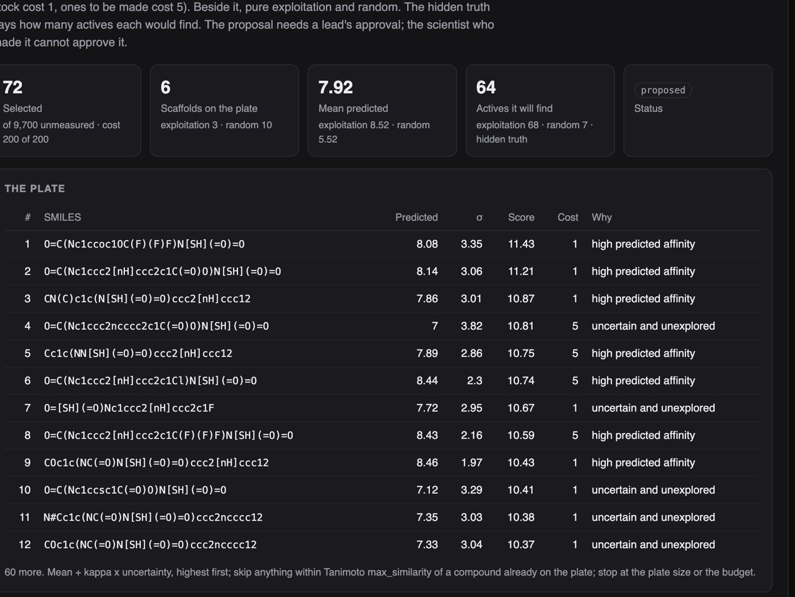
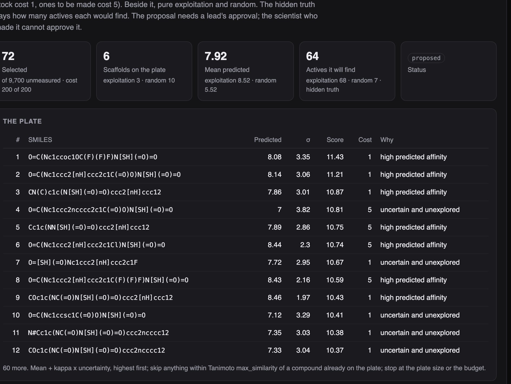
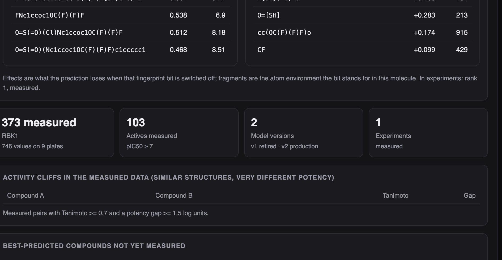

Python · RDKit · Cheminformatics · 2026-10
Which 96 Compounds Go on the Next Plate?
A discovery workspace over 10,000 invented molecules and one invented target: an affinity model whose uncertainty is checked, not asserted (93% inside its 90% band after rescaling); a plate selection compared with exploitation and random and scored on the hidden truth; and a trace from every recommendation to measured neighbours, substructures and model version.

Built from a written blueprint as one vertical slice. The library and the target are simulated: 10,000 molecules are assembled from fragments and handled by RDKit as real structures, but the target and the rule that gives each compound its affinity are invented, which is what lets every prediction be checked against the truth. Research decision support on synthetic data; nothing clinical. No language model is used. Not built: real ChEMBL or PubChem data, graph neural networks, docking, literature search, Kafka, Terraform, single sign-on.
01 — The problem
A discovery team has thousands of compounds it could make or buy and a plate of 96 wells to fill. The model that ranks them is only as good as its honesty about what it does not know; the chemist deciding wants to see the measured neighbours, not a score. And when the plate comes back, the model has to update without losing track of which version said what. Can software predict with an honest band, choose a plate under a budget, and let a chemist trace every recommendation?
Blueprint 7 of fifteen in a third build book, built as its demo scenario end to end.
02 — What I built
A Python service on PostgreSQL with a background worker and a web page, started by one docker compose up.
- A compound registry on RDKit: canonical SMILES, InChIKey deduplication, descriptors, Lipinski.
- An affinity model with versions in a registry, each with a held-out report against a nearest-neighbour baseline.
- Uncertainty that is checked: the ensemble spread rescaled on held-out data, its coverage measured.
- Plate selection under a budget, with exploitation and random beside it and the hidden truth scoring all three.
- A trace per compound: neighbours, substructures, model version; a lead approves every plate.
03 — How it was built
- 01
Real molecules, invented target
Ten cores, ten linkers and eighteen substituents combine into about 10,000 SMILES; RDKit parses each, canonicalises it, and throws out duplicates by InChIKey. The target is invented: a rule gives each compound a pIC50 from its substructures (a sulfonamide and an aryl amine bind; an acid hurts; a basic ring kills the sulfonamide series), its size and its lipophilicity, with noise. The rule is shown at the end of the demo and the models never see it.
m = Chem.MolFromSmiles(smiles_for(core, linker, s1, s2)) smi = Chem.MolToSmiles(m) - 02
An uncertainty band that is made honest, and says so
Five gradient-boosted regressors on bootstrap resamples disagree a little, and that disagreement is the usual stand-in for uncertainty. It was two to three times too narrow: only 57% of held-out compounds fell inside the 90% band. One scale factor, fitted on a held-out fifth so that 90% of its compounds land inside, brings the band to 83–93%. The page says the band is scaled, and the evaluation reports that the uncertainty barely predicts which compounds will be wrong.
scale = float(np.quantile(np.abs(p.mean(axis=0) - y[hold]) / raw, 0.9) / Z90) - 03
Three plates, scored by the truth
The proposed plate scores each unmeasured compound by predicted affinity plus its uncertainty, skips anything within Tanimoto 0.7 of a compound already picked, and stops at 96 or the budget (compounds to be made cost five times a compound in stock). Pure exploitation and random are computed beside it, and because the target is invented, the page can say how many actives each would really find: 64, 68 and 7 in the demo.
if bvs and max(DataStructs.BulkTanimotoSimilarity(bv, bvs)) > max_sim: continue - 04
Active learning did not earn its reputation here
On three other libraries the upper-confidence selection found 73 actives a plate to exploitation's 83, and after the plate was folded in the model's error was the same as exploitation's; only a random plate lowered it. The uncertain compounds the rule reaches for are the expensive ones to make, and with a rule this additive they teach the model little. The system does not hide this: it exposes the knob, shows the alternatives, and leaves the call to the lead who approves the plate.
rnd = r.choice(sorted(cands), body.plate_size, replace=False) truth = {"proposed": ..., "top_by_prediction": ..., "random": int((w["truth"][rnd] >= world.ACTIVE_LIMIT).sum())} - 05
Trace a recommendation to things a chemist can check
For any compound: the prediction and band, the model version with its held-out calibration, its own measurements if any, the five most similar measured compounds with their values, and the substructures that move the prediction, found by switching each fingerprint bit off and watching the prediction change, then mapping the bit back to the atoms it stands for in that molecule. In the demo the aryl amine adds 2.3 and the sulfonamide 0.7, which is the hidden rule showing through.
alts[np.arange(1, len(on) + 1), on] = 0 p = np.mean([m.predict(alts) for m in model["members"]], axis=0)
04 — Results
The demo. The proposed plate against exploitation and random, with the hidden truth's count of actives:

A recommendation traced: prediction and band, the nearest measured compounds, and the substructures behind it.

On three other simulated libraries:
| System | Simple | |
|---|---|---|
| Affinity RMSE | 0.62–0.64 | 0.85–0.87 |
| In the 90% band | 83–91% | – |
| Actives per plate | 73 | 83 |
| Model error after | 0.629 | 0.628 |
| Random plate | 8 actives | 0.606 |
"Simple" is Tanimoto nearest neighbours for the model and pure exploitation (the 96 best-predicted) for the plate. The last row is the random plate: few actives, and the only selection that lowered the model's error.
Honest limits. The band is honest because it was scaled to be, and the uncertainty still says little about which compounds will be wrong. The active-learning rule lost to exploitation on actives and to random on learning. The hidden rule is additive and fingerprints were made to find it, so every number here describes the generator, not a real target.
Checks. 13 tests, including: the library is 10,000 distinct real structures, the hidden rule rewards what it says, the model beats nearest neighbours and its band holds between 65% and 97%, a plate never exceeds its budget or its similarity rule, an unparseable SMILES is refused, a duplicate measurement stores nothing, the proposer cannot approve, and one lab cannot see another's compounds.
05 — What I'd do next
- A real public assay (ChEMBL, licence permitting) to see how much of the model and the band survive a real landscape.
- A learned uncertainty rather than one scale factor.
- A second objective on the plate: actives and information together, with the trade-off shown.